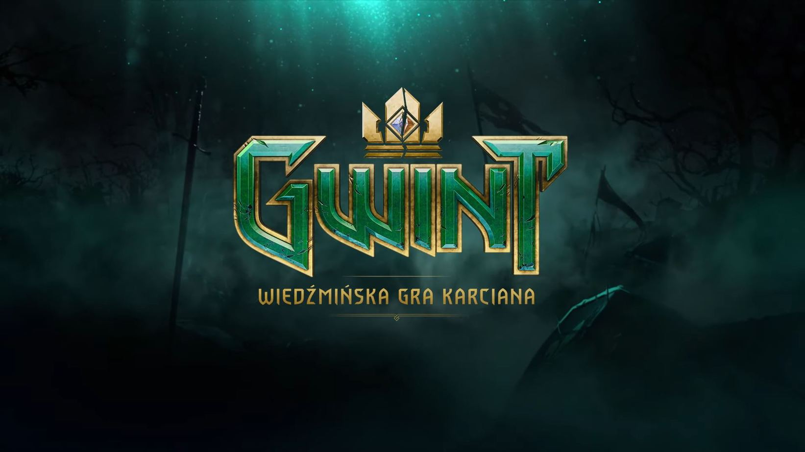
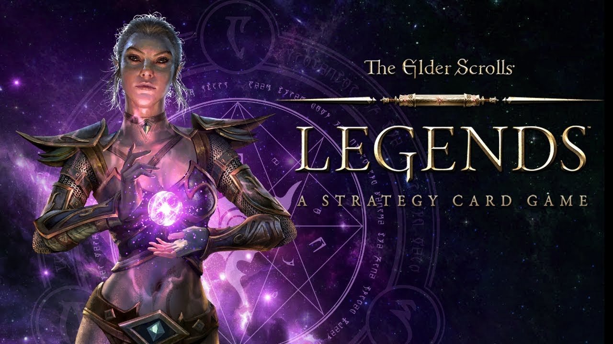

GryPC.PL
GryPC.PL
Card games
Gra karciana to gra, w której używa się kart do gry.
Pare przykładów:

"Hearthstone", pierwotnie "Hearthstone: Heroes of Warcraft" to kolekcjonerska gra karciana wyprodukowana i wydana przez Blizzard Entertainment, której premiera na komputery osobiste z systemem Windows i Macintosh odbyła się 11 marca 2014 roku. Później wydano także wersję na urządzenia mobilne z systemami iOS i Android oraz dodano możliwość gry przy pomocy ekranu dotykowego na urządzeniach z systemem Windows 8. Gra oparta jest na modelu free-to-play z systemem mikropłatności, a głównym elementem rozgrywki są pojedynki online przeciwko innym graczom w serwisie Battle.net. "Hearthstone" zostało dobrze przyjęte przez krytyków, uzyskując wysokie średnie ocen w agregatorach. W wersji na komputery osobiste gra zdobyła 87,57% w serwisie GameRankings oraz 88/100 w portalu Metacritic. W listopadzie 2015 roku liczba założonych kont w grze przekroczyła 40 milionów. Gra doczekała się osiemnastu rozszerzeń zatytułowanych Klątwa Naxxramas, Gobliny vs Gnomy, Czarna Góra, Wielki turniej, Liga Odkrywców, Przedwieczni Bogowie, Pewnej nocy w Karazhanie, Ciemne zaułki Gadżetonu, Podróż do wnętrza Un'Goro, Rycerze Mroźnego Tronu, Koboldy i katakumby, Wiedźmi Las, Projekt Hukatomba, Rozróba Rastakana, Wyjście z cienia, Wybawcy Uldum, Wejście smoków oraz Popioły Rubieży, Scholomancjum oraz Obłędny Festyn Lunomroku.

"Gwint: Wiedźmińska gra karciana" z angielskiego "Gwent: The Witcher Card Game" to komputerowa kolekcjonerska gra karciana oparta na modelu free-to-play, stworzona przez polskie studio CD Projekt Red i wydana na platformach Microsoft Windows, PlayStation 4, Xbox One, iOS oraz Android. Tytuł stanowi samodzielną, bardziej rozbudowaną wersję minigry, która po raz pierwszy pojawiła się w grze "Wiedźmin 3: Dziki Gon" i szybko okrzyknięta została jedną z najlepszych w historii branży. Do ogłoszenia prac nad produkcją doszło doszło 13 czerwca 2016. Od 24 maja 2017 gra znajdowała się w fazie otwartych beta testów. Premiera gry na komputery osobiste odbyła się 23 października 2018. Wersje konsolowe ukazały się 4 grudnia 2018. Premiera na platformie iOS odbyła się 29 października 2019. 24 marca 2020 gra ukazała się na platformie Android. Produkcja spotkała się z pozytywnym odbiorem krytyków, uzyskując wysokie średnie ocen w agregatorach. Od czasu premiery gra doczekała się pięciu rozszerzeń zatytułowanych Krwawa klątwa, Novigrad, Żelazna wola, Kupcy Ofiru oraz Pan Lusterko.

"The Elder Scrolls: Legends" to strategiczna gra karciana, umieszczona w uniwersum serii cRPG The Elder Scrolls. Tytuł dostępny jest free-to-play. "TES: Legends" miało swoją premierę po raz pierwszy 9 marca 2017 roku, kiedy to ukazało się w wersji przeznaczonej dla komputerów PC.
Gra nie rozgrywa się w żadnym konkretnym przedziale czasowym, dlatego też można w niej spotkać postacie z całego cyklu.
Generalny krój rozgrywki przypomina inne gry karciane tego typu, np. GWINT czy Hearthstone.
Podczas zabawy, gracz ma na celu zbudowanie talii z wybranej przez siebie frakcji, którą to będzie potem prowadził pojedynki przeciw SI lub innym graczom. Głównym celem potyczki, jest eliminacja wroga, poprzez odebranie mu wszystkich punktów zdrowia.
Gra nie rozgrywa się w żadnym konkretnym przedziale czasowym, dlatego też można w niej spotkać postacie z całego cyklu.
Generalny krój rozgrywki przypomina inne gry karciane tego typu, np. GWINT czy Hearthstone.
Podczas zabawy, gracz ma na celu zbudowanie talii z wybranej przez siebie frakcji, którą to będzie potem prowadził pojedynki przeciw SI lub innym graczom. Głównym celem potyczki, jest eliminacja wroga, poprzez odebranie mu wszystkich punktów zdrowia.